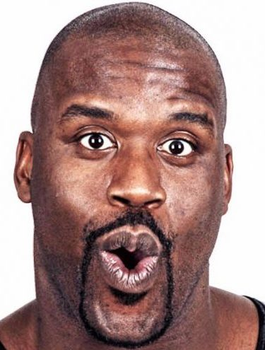
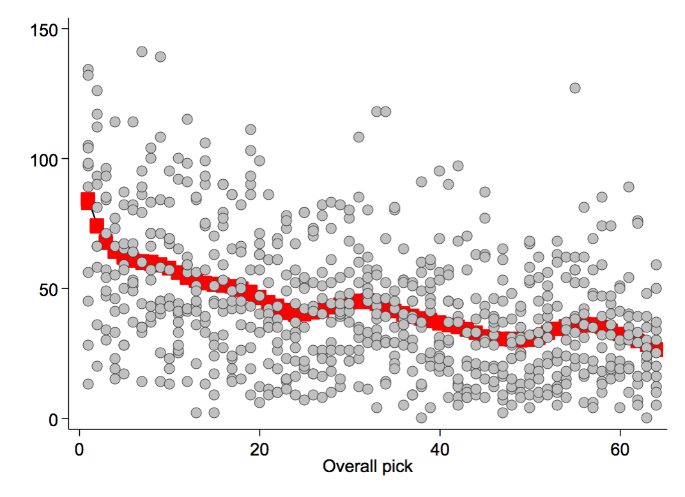

Who's the best drafter?
Part I - Draft Skill
 by Shaquille 'Shaq' O'Neal
March 2020
Springfield, MA
An interesting tidbit about Josh's dominance in the Player Pool thus far is that he's yet to draft from the first position. Does this suggest the first pick doesn't offer any advantage, or worse, handicaps the contestant? I suspect that draft position indeed influences your final standings in some way. If so, your skill of selecting players isn't necessarily reflected when the orchestra strikes up "One Shining Moment." We have eleven years of spreadsheet data, so let's take a look.
Below are the point totals for picks 1-64 in the spreadsheet era. Not surprisingly, there's a drop in point output as players are taken off the board. We can use this data to calculate an expected point total for each draft pick via locally estimated scatterplot smoothing:
We now have scoring outputs (red fit line) for all 64 draft picks and can use these to predict scoring for each of the eight draft slots:
| Draft slot | Expected pts |
|---|---|
| 1 | 361 |
| 2 | 351 |
| 3 | 344 |
| 4 | 342 |
| 5 | 341 |
| 6 | 342 |
| 7 | 342 |
| 8 | 343 |
Drafting first has provided about a 10 point edge over slot two, which in turn has a 7-10 point advantage over slots 3-8. I wondered whether this result fits with other horseshoe/snake draft results. A quick search came up with a single analysis. In a given fantasy football league, each lineup is guaranteed to play in the same number of games, so I'd argue more draft skill is required in the Player Pool, as you need to gauge team success much more stringently. This difference may explain why Player Pool slots 3-8 are essentially equal, whereas football slots continue to degrade as the good running backs are picked.
You're all familiar with your respective Player Pool cumulative points ranking, but how does your performance compare to the expected point total based on your draft position?
| Points rank | Expected | Actual | Difference | Diff % (skill) | Skill rank | |
|---|---|---|---|---|---|---|
| Adam | 5 | 3794 | 3780 | -14 | -0.37 | 5 |
| Alex | 4 | 3810 | 3834 | 24 | 0.63 | 4 |
| Farach | 2 | 3818 | 3864 | 46 | 1.20 | 3 |
| Lloyd | 1 | 3809 | 3893 | 84 | 2.21 | 1 |
| Bryan | 6 | 3785 | 3732 | -53 | -1.40 | 6 |
| James | 7 | 3793 | 3674 | -119 | -3.14 | 7 |
| Josh | 2 | 3784 | 3864 | 80 | 2.11 | 2 |
| Rob | 8 | 3835 | 3658 | -177 | -4.62 | 8 |
I’ve scaled the gross difference by the original expectation to define skill. As you can see, draft skill rankings track nearly perfectly with your cumulative points rankings. Eleven years of Lloyd’s hat draws have produced a well-balanced distribution of draft slots, so draft position hasn’t drastically affected your cumulative point totals. The more years you play, the closer you’ll get to equivalent point expectations.
For now, we can say that Josh has drafted better than Farach, despite them having identical point totals.